Antes de Foundations hubo tres drops. Los tres se agotaron.
El nacimiento de Broken Stars: la ruptura emocional y el origen de una identidad construida a partir de las heridas.
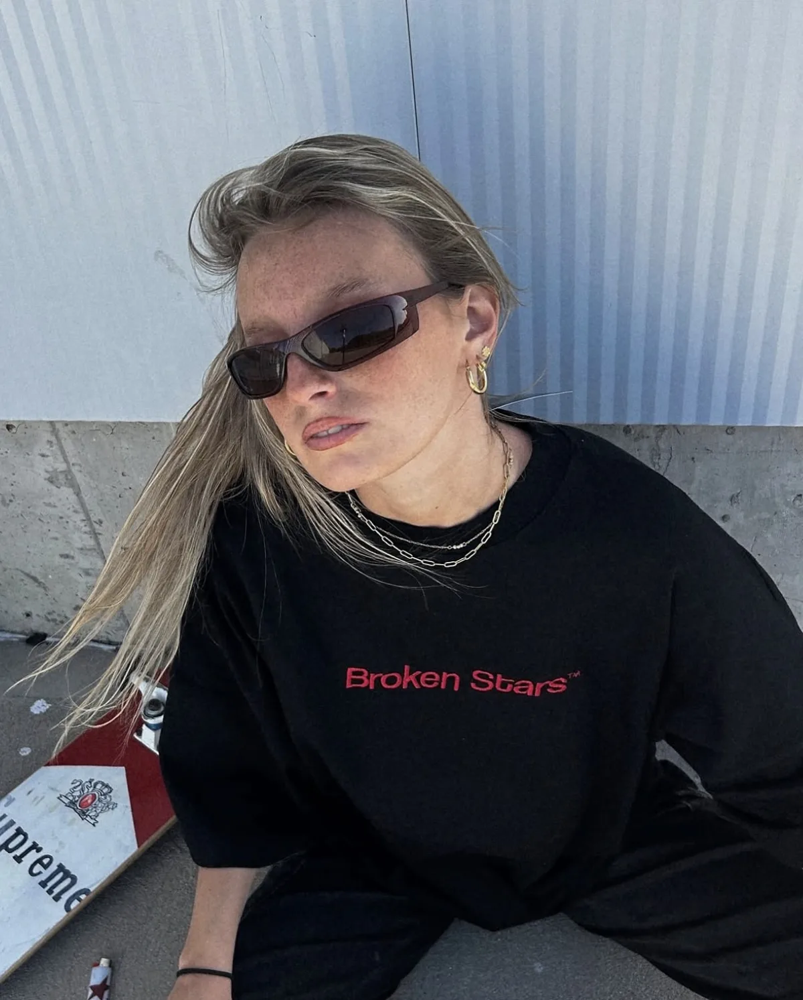
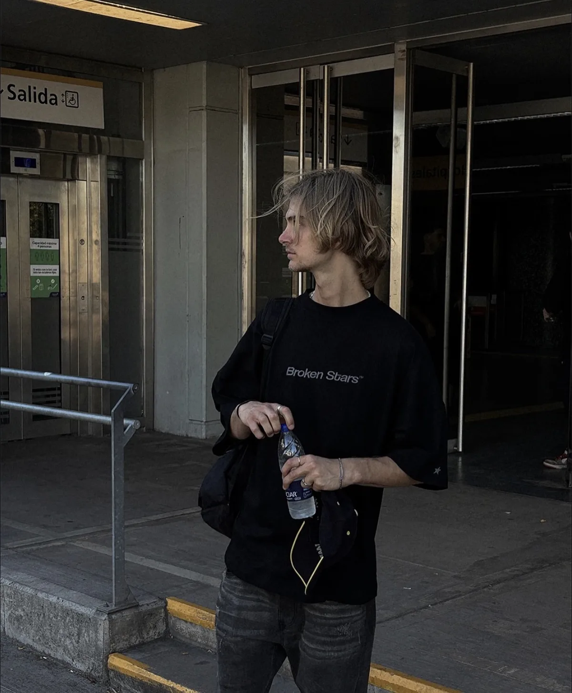
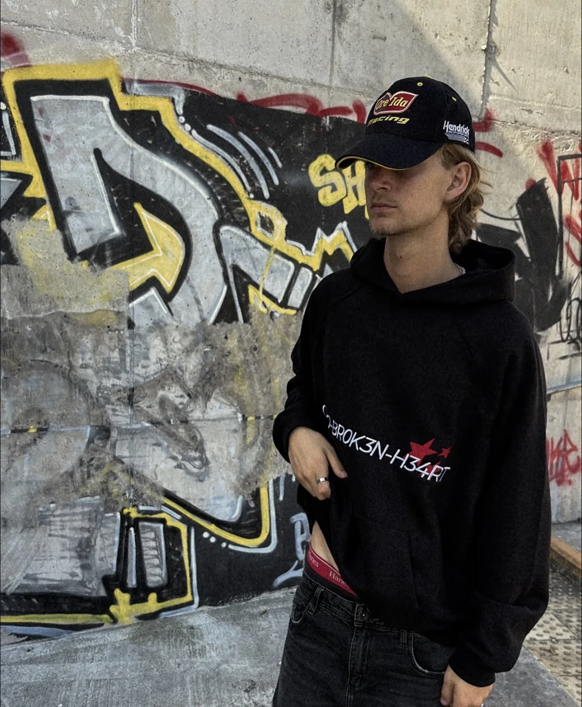
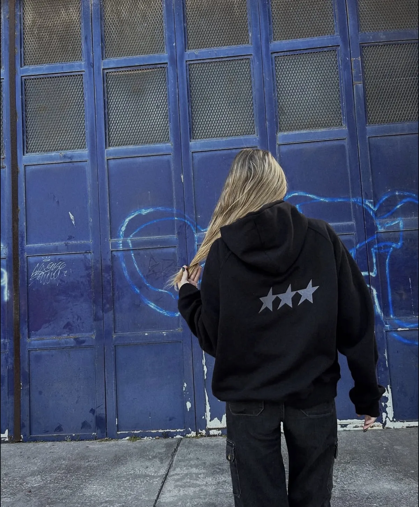
La resiliencia y la capacidad de seguir brillando incluso después de atravesar momentos difíciles.
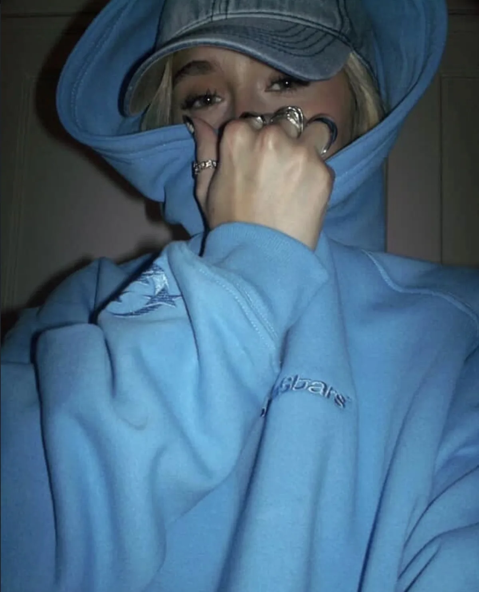
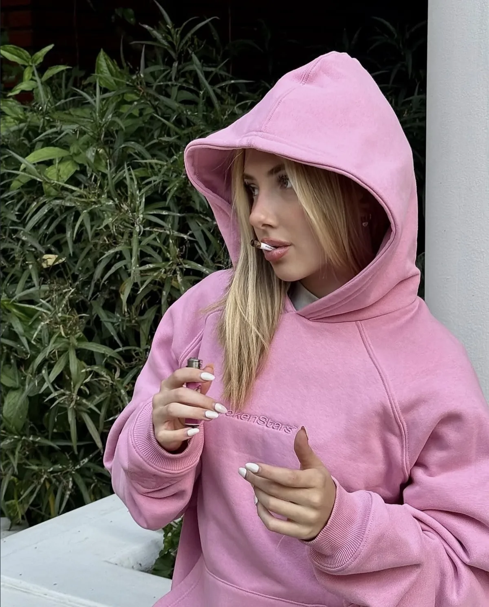
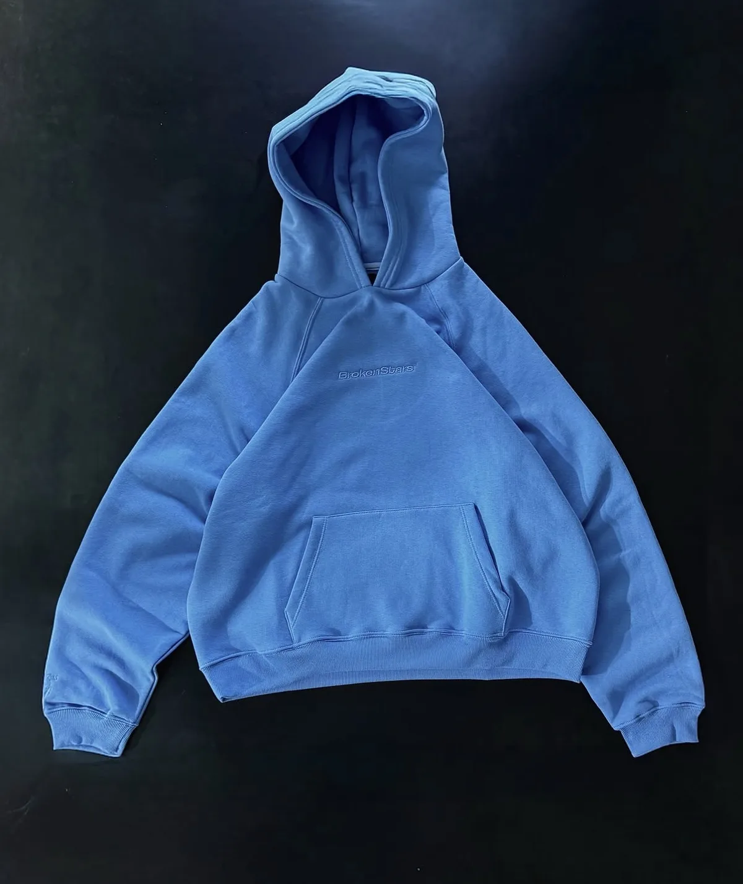
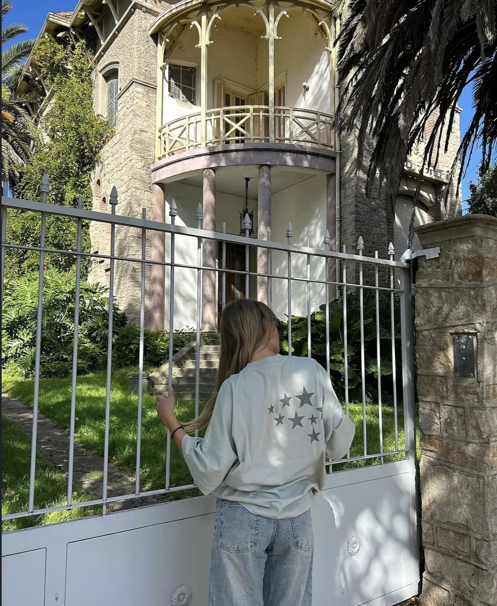
La transformación, la evolución personal y la aceptación de que todo cambia.
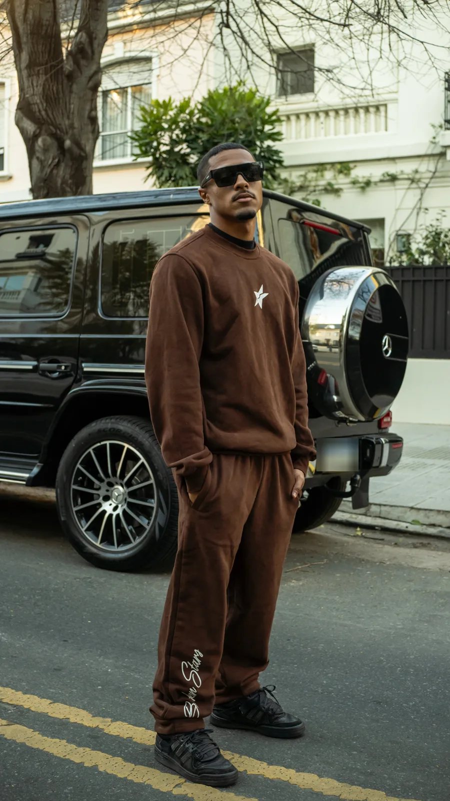
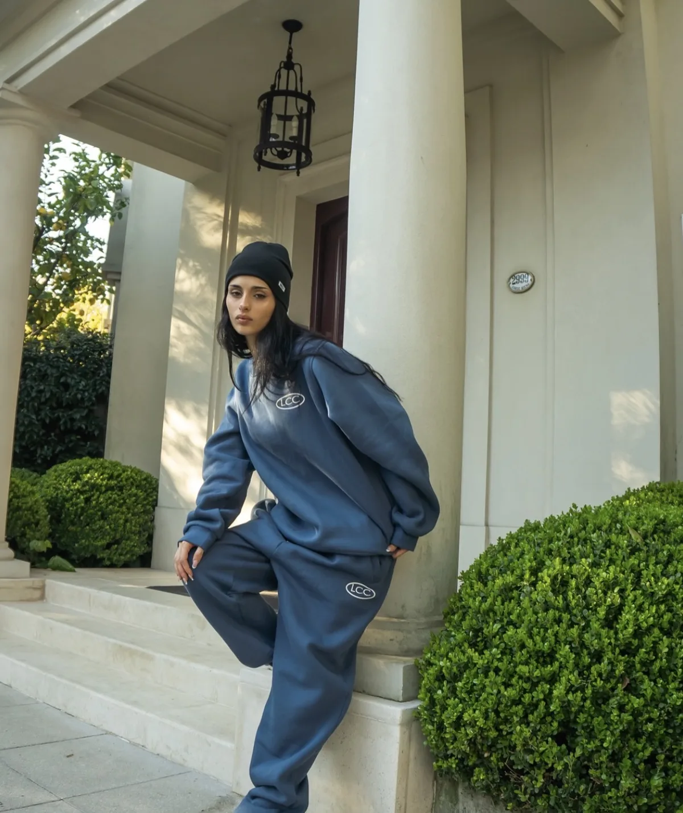
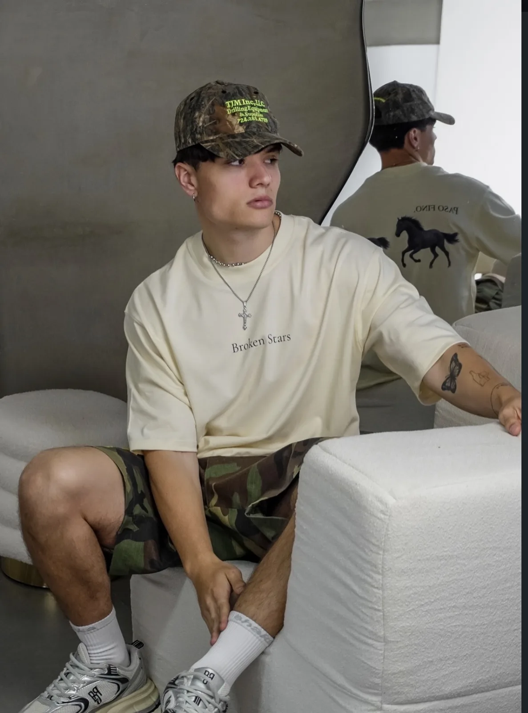